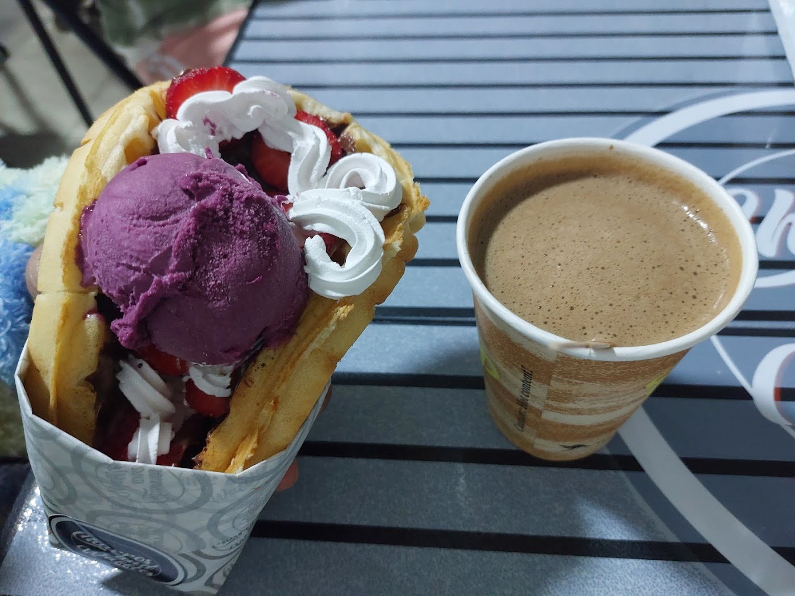
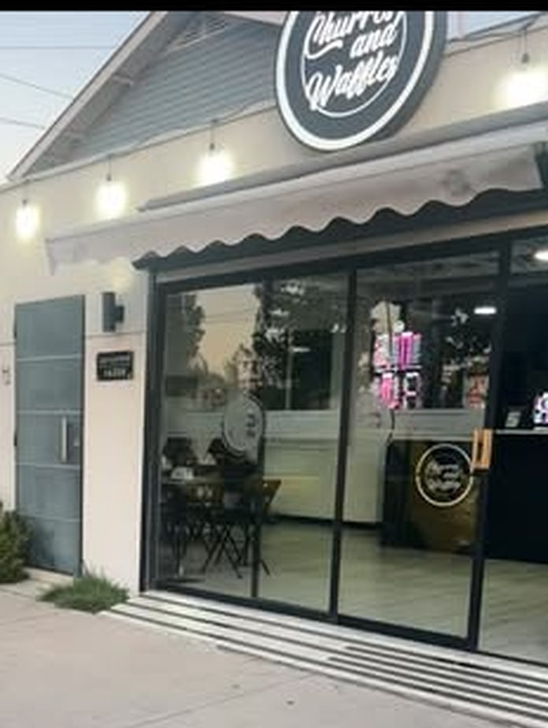
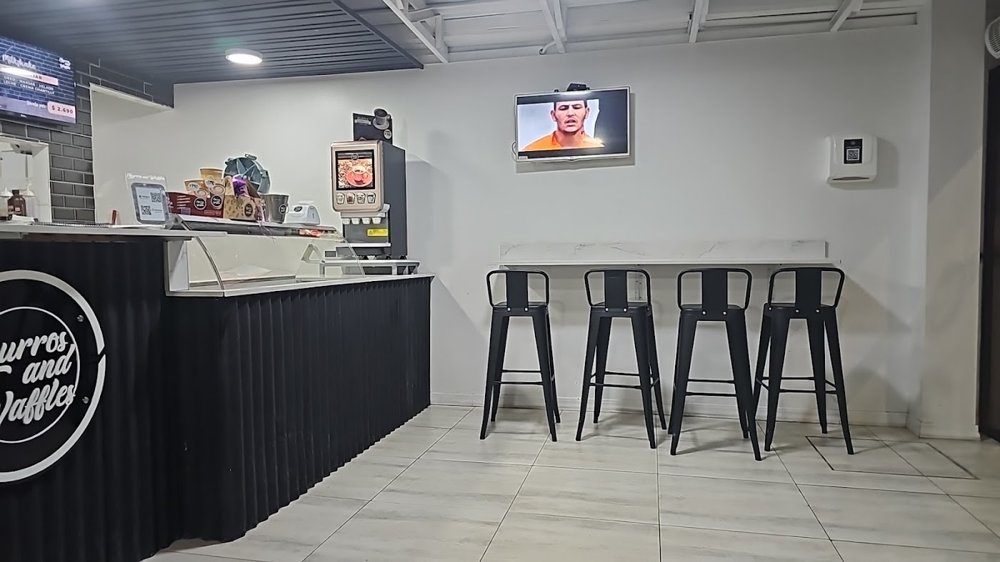
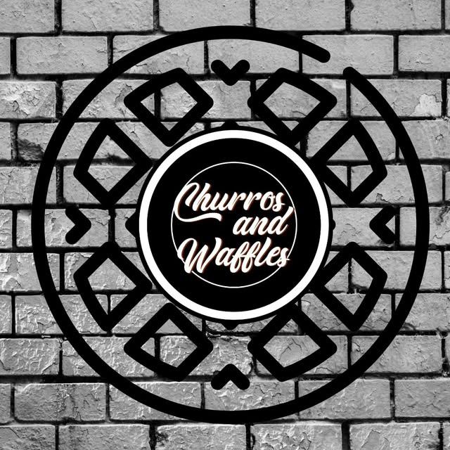
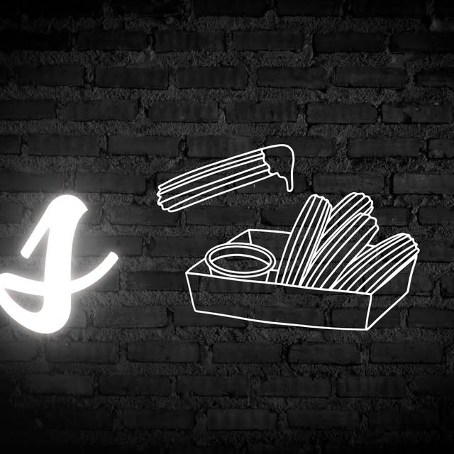

Churros hechos al momento
Tradicionales con la salsa que elijas, rellenos de nutella, manjar o frambuesa, o con topping de oreo, manjar nuez, manjar maní o chantilly.

Churros · Waffles · Helados · San Bernardo
Churros tradicionales, rellenos y con topping, waffles, helados, milkshakes y café en Los Suspiros. Abierto todos los días hasta las 21:30.
Tradicionales con la salsa que elijas, rellenos de nutella, manjar o frambuesa, o con topping de oreo, manjar nuez, manjar maní o chantilly.
"Exquisitos los wafles, muy buenos y económicos" — lo dejó escrito una clienta en su ficha de Google.
Helados, milkshakes, granizados, frutillas con crema y jugos naturales. Todo lo nombran sus propias reseñas.
Churros and Waffles está en Los Suspiros, San Bernardo: churros hechos al momento, waffles, helados artesanales, milkshakes y café, con mesas adentro y despacho por WhatsApp.
Tienen 4.4 estrellas con 42 opiniones y lo que más repiten es la atención. Una reseña lo dice directo: "es atendido por sus dueños y la calidad de atención es excelente". Otra suma la lista completa: "churros, wafles, frutillas con crema, granizados, jugos naturales… muy limpio el lugar".




Los precios de los churros son los que ellos mismos publican en su Instagram. Arma tu pedido y mándalo por WhatsApp.
"Buena atención, sus precios accesibles, tienen bastante variedad: churros, wafles, frutillas con crema, granizados, jugos naturales… Muy limpio el lugar."
"Exquisito todo, lugar muy limpio y ordenado. Es atendido por sus dueños y la calidad de atención es excelente. ¡Lo recomiendo!"
"Excelente servicio, tanto los churros como los waffles son exquisitos, y para qué decir la atención: perfecta. Lo recomiendo al mil."